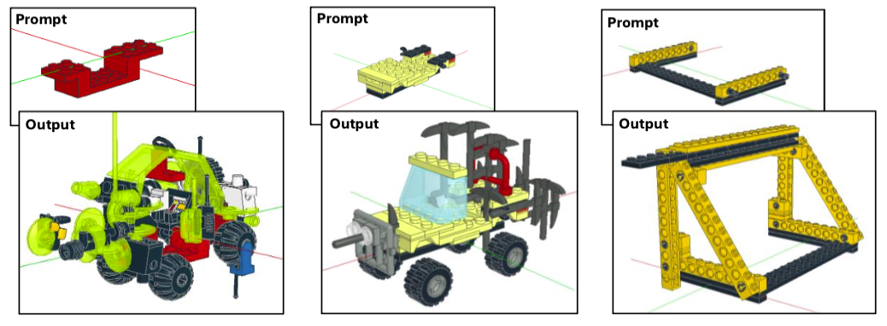
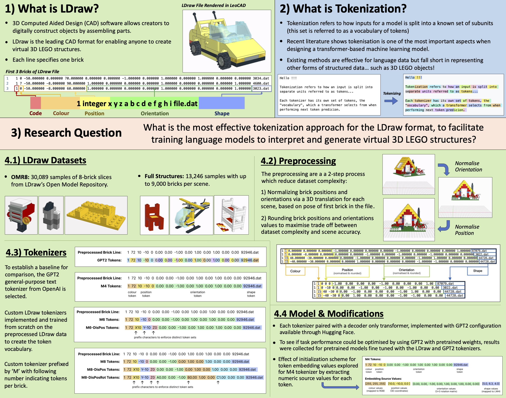

Project description
LDraw Tokenization for 3D LEGO Generation my honours year machine learning research project exploring how autoregressive
transformers can interpret and generate virtual LEGO structures.
Using Python, Hugging Face and a GPT-2-based architecture, the project involved curating over 13,000 LDraw models and developing
custom tokenizers representing each brick’s colour, position, orientation and shape.
Experiments demonstrated that LDraw-specific tokenization outperformed general-purpose methods, establishing a scalable foundation
for AI-assisted 3D CAD generation.

